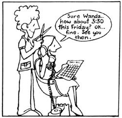

In issue 37, Bill Wodraska shared some of his thoughts regarding one of humankind's better ideas-barter-and offered up an interesting suggestion: "I'd like to see a continuing feature on barter and skill-and-labor exchanges," said Bill. "Maybe MOTHER could even swap subscriptions for contributions to the department." "You're on!" we replied... and announced our stillstanding offer. Anyone (and that means you!) who sends us a short (about 300 words) account of an actual barter that's good enough to print will receive-as the folks on the following page have-a twelve-month subscription (or extension of same) to THE Mother Earth News(restricted).
The Mother Earth News(restricted), Inc., P.O. Box 70, Hendersonville, N.C. 28791
I've been a garage sale addict ever since I discovered that children's toys and clothes can be purchased, for bargain prices, at such "housecleaning" events. And I recently found a way to combine the fun of browsing for good deals with swapping . . . so I'm now able to save even more of our hard-earned dollars.
As my 15-month-old daughter and I sat in the waiting room of our pediatrician's office, I was thinking about the exchanges I had read about in MOTHER just the night before, and wishing that I could come up with one of those "super swaps". Theresa, meanwhile, was poking through the basket of toys I'd brought along for her, pulling out one worn but usable plaything after another . . . and suddenly I had an idea.
When our turn with the doctor came, I hesitantly proposed my first trade (while telling myself that the worst response the physician could give would be a simple "no"). I offered to bring him a bagful of garage sale toys, which he could use to entertain children in his waiting room, as payment for my daughter's next regular checkup. The doc's response was so quick and so positive ("Sure! Great idea! ") that I'm going to offer the same swap to my dentist the next time I visit him!
L.H.
Indiana
When my husband and I first settled on our five-acre homestead three years ago, I was still somewhat citified and a bit nervous at the thought of trying to barter. It wasn't long, however, before I was trading as eagerly as the country-raised bargain hunters in the area!
Our acreage is off the power company's beaten track, so one of our first tasks was to exchange a suddenly useless electric washing machine for an item we did need: a woodburning stove. Once folks heard that we were willing to trade, we had no trouble finding offers . . . and finally struck a bargain with a city dweller (and laundromat loather) who had an old Franklin stove that she was discarding. Well, one person's trash sure is another's treasure, because that rejected woodburner has kept our small home cozy and warm for the past two winters.
After savoring the success of that first swap, we began bartering with neighbors, and with the merchants in town, at every opportunity. Our best deals include swapping a guitar for a treadle sewing machine, doing babysitting in exchange for rides to the city; and-my favorite-receiving a beautiful sleeper sofa (which served as a birthing bed for our son) in return for a scavenged wood cookstove.
One of our most recently attempted swaps involved our proposal to trade labor for a friend's collection of THE Mother Earth News . . . but our buddy wouldn't part with his copies. So how about a subscription for this report, MOM?
J .L.
California
I'm glad to see that the practice of trading is reawakening in the United States. My husband and I have come to consider swapping a regular part of our lifestyle . . . here in a land where the barter system has always been the main method of exchange. We live in a rural farming region in southern Ecuador, and our favorite deal is a recurring one . . . which we engage in every week, on market day.
At six o'clock on Sunday morning, we open our door to greet the dozen or more men, women, and children-laden with baskets of chickens and fruit or sacks of grain-who've gathered on our porch in the early dawn. In a few minutes our truck (one of only three in the area) is loaded with the peddlers and their goods, and we wend our way toward the neighboring town. En route we stop to pick up a few regular marketgoers who travel from their mountain farms on donkeyback and wait by the side of the road for our "mini-bus". These folks tie their beasts by the roadside, load up their cargo and families, and continue on to the village with us.
Most folks in these parts do charge cash for this sort of taxi service, but our passengers know that my husband and I prefer to barter. Invariably, therefore-although we've never arranged a system of payment-we'll find baskets filled with papayas, bananas, avocados, eggs, and herbs in the back of the truck at the close of a marketing day.
In a time when old ways of life are too often being rejected in the name of "progress", it's comforting to know that the simple custom of neighborly trading is still practiced . . . apparently all over the world!
J.H.
Loja, Ecuador
You may not believe this, but I've often traded my writing services for a song . . . and been pleased to do so! You see, I work, part time, publicizing a country music hall in West Virginia. I get paid for that task, of course, but the best part of my enterprise is that-as a result of the work-I'm able to meet dozens of old-time and bluegrass musicians. Furthermore, most of the tunemasters are relatively unknown, and thus often need someone to help them prepare publicity material for bookings, write and distribute news briefs about their musical activities, and-when the going gets good-compose liner notes for their (usually self-subsidized) albums.
So, in return for my wordsmithing, my lyrical acquaintances send me tapes of their songs (a few of which are old or rarely sung tunes), invite me into their homes to listen to them play, and give me copies of their records.
Since I'm no picker (despite my herculean efforts to develop some small semblance of musical talent), my bartered verbiage pays off in good music and good friends that I'd be unable to enjoy otherwise. My foot-tapping companions, in turn, are exposed to new and larger audiences as a result of my work. All of the parties involved share the riches in this deal . . . and not even a penny changes hands!
E.M.
Ohio
While I was getting my hair cut one afternoon a few months ago, the telephone in the beauty shop seemed to ring constantly... and what should have been a 30-minute appointment soon stretched into an hour's production. It was obvious that my hair-stylist friend was getting behind in her schedule (and that her none-too-patient customers were wasting a good bit of time as well) . . . simply because she was continually being interrupted by folks calling to arrange appointments.
I pondered my buddy's predicament during that 80-minute wait, and then proposed a trade: I offered my services as receptionist-for several hours a week-in exchange for coiffures, hair products, and facials.
Now, I handle the shop's calls during peak business hours, allowing my friend to keep to a tight schedule (she can accommodate more customers under the new system, too) . . . and I get my face and hair pampered at regular intervals (her herbal facials are marvelous!).
We're both quite pleased with our newfound swap . . . in fact, you might say there are two more confirmed "horse traders" up here in the 49th state!
K.H.
Alaska
|
 |
|
|